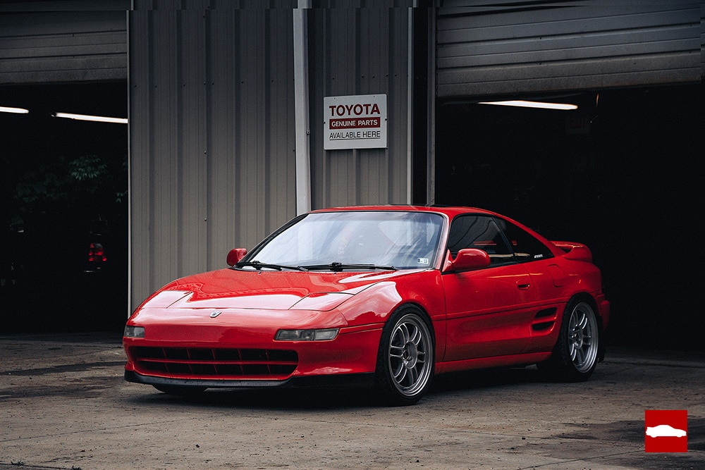

Modely:
-
Nissan GT-R
Je jedním z nejznámějších modelů JDM automobilů a patří mezi nejlepší sportovní vozy na trhu. Tento výkonný automobil má maximální rychlost
blížící se 300 km/h a je poháněn vysokovýkonným motorem. Cena Nissan GT-R se pohybuje kolem 100 000 až 150 000 dolarů, v závislosti na konkrétním modelu a specifikacích.
Vzhled Nissan GT-R je moderní a agresivní, s širokými blatníky, výraznými liniemi a sportovními prvky. Kromě toho má auto také nízký a aerodynamický profil,
což dodává celkovému vzhledu dynamiku.
Mezi hlavní plusy Nissan GT-R patří vysoký výkon, nízká hmotnost a vynikající ovladatelnost. Tyto vlastnosti dělají z Nissan GT-R jedno z nejlepších aut pro
sportovní jízdu a závodění.
Minusy Nissan GT-R se týkají především ceny, která může být pro některé lidi příliš vysoká. Kromě toho mohou být některé funkce a technologie považovány za
složité, což může být pro některé řidiče výzvou.


-
Toyota MR2
(Mid-engine, Rear-wheel drive, 2-seater) byl sportovní automobil vyráběný japonskou automobilkou Toyota. Byl produkován v letech 1984 až 2007
a byl určen pro zákazníky, kteří hledali výkonný a zábavný sportovní automobil s malými rozměry.
Maximální rychlost Toyota MR2 se pohybovala kolem 240 km/h, což bylo dostatečné pro sportovní jízdu. Cena tohoto auta v době uvedení na trh se pohybovala
kolem 15 000 až 20 000 dolarů, což bylo cenově dostupnější než některé jiné sportovní auta.
Vzhled Toyota MR2 je kompaktní a aerodynamický, s mnoha sportovními prvky jako jsou široké blatníky, velké kola a výfukové koncovky.
Tyto prvky dodávají celkovému vzhledu agresivní a sportovní charakter.
Mezi hlavní plusy Toyota MR2 patří výkonný motor, skvělá ovladatelnost a nízká hmotnost. Tyto vlastnosti dělají z Toyota MR2 zábavné auto pro sportovní jízdu.
Minusy Toyota MR2 se týkají především interiéru, který může být pro některé řidiče příliš jednoduchý a neuspokojivý.
Kromě toho mohou být některé funkce a technologie považovány za zastaralé, což může být pro některé řidiče nevýhodou.
Tyto nedostatky však nebrání v tom, aby byl Toyota MR2 oblíbeným modelem mezi fanoušky JDM aut.

-
Toyota supra
Je jedním z nejznámějších a nejoblíbenějších modelů JDM aut. Byl produkován japonskou automobilkou
Toyota v letech 1978 až 2002 a byl považován za jeden z nejlepších sportovních aut své doby.
Maximální rychlost Toyota Supry byla vysoká a pohybovala se kolem 270 km/h, což ji řadilo mezi jedny z nejrychlejších
sportovních aut na trhu. Cena Toyota Supry se pohybovala v rozmezí 30 000 až 50 000 dolarů, což bylo cenově srovnatelné s
jinými sportovními auty v této třídě.
Vzhled Toyota Supry je elegantní a aerodynamický s mnoha sportovními prvky jako jsou široké blatníky, velká kola a výfukové koncovky.
Tyto prvky dodávají celkovému vzhledu agresivní a sportovní charakter.
Mezi hlavní plusy Toyota Supry patří výkonný motor, skvělá ovladatelnost a dobrá dynamika jízdy. Tyto vlastnosti dělají z Toyota Supry
zábavné a výkonné auto pro sportovní jízdu.
Minusy Toyota Supry se týkají především vysoké ceny a vysokých provozních nákladů. Tyto náklady mohou být pro některé řidiče příliš
vysoké a bránit jim v tom, aby si mohli pořídit toto auto. Kromě toho mohou být některé technologie považovány za zastaralé, což může
být pro některé řidiče nevýhodou. Tyto nedostatky však nebrání v tom, aby byla Toyota Supra oblíbeným modelem mezi fanoušky JDM aut.
-
Nissan Silvia
Je sportovní automobil, který byl vyráběn japonskou automobilkou Nissan v letech 1964 až 2002.
Jedná se o kultovní model JDM aut, který se stal velmi populárním díky svému sportovnímu vzhledu, dobré ovladatelnosti a výkonnému motoru.
Maximální rychlost Nissanu Silvia se pohybuje kolem 220 km/h, což je solidní rychlost pro sportovní auto této třídy.
Cena Nissanu Silvia se liší v závislosti na ročníku a stavu vozu, ale v průměru se pohybuje mezi 10 000 až 20 000 dolarů.
Vzhled Nissanu Silvia je charakteristický sportovními prvky, jako jsou široké blatníky, nízký podvozek a agresivní předek.
Silvia je také oblíbená mezi tunery, kteří upravují vzhled a výkon tohoto auta.
Plusy Nissanu Silvia zahrnují dobré ovladatelnosti, skvělý výkon a sportovní vzhled. Tyto vlastnosti dělají z Nissanu Silvia velmi zábavné auto na řízení,
které je oblíbené mezi fanoušky JDM aut.
Mezi minusy Nissanu Silvia patří menší prostor pro posádku a náklady na údržbu. Nissan Silvia je spíše menší auto, což může být pro některé řidiče nevýhodou,
zejména pokud hledají více prostoru pro posádku nebo zavazadla. Náklady na údržbu mohou také být vysoké, zejména pokud se jedná o starší modely, které vyžadují
časté opravy a údržbu. Nicméně, i přes tyto nedostatky zůstává Nissan Silvia oblíbeným modelem JDM aut a má věrnou fanouškovskou základnu.


-
Toyota AE86
Také známá jako Toyota Corolla Levin nebo Toyota Sprinter Trueno, je sportovní auto vyráběné japonskou automobilkou Toyota v letech 1983 až 1987.
Tento model se stal legendou mezi fanoušky JDM aut a stal se ikonou japonského driftování.
Maximální rychlost Toyota AE86 se pohybuje okolo 200 km/h, což je poměrně dobrá hodnota pro sportovní auto tohoto typu. Cena Toyota AE86 se liší v závislosti na ročníku,
stavu vozu a mnoha dalších faktorech. V dnešní době se ceny začínají pohybovat kolem 10 000 dolarů a mohou dosáhnout až 30 000 dolarů.
Vzhled Toyota AE86 je jednoduchý a elegantní. Tento model se vyznačuje ostrými liniemi, jednoduchým designem a čistým vzhledem,
který se stále udržuje v kurzu mezi fanoušky sportovních aut.
Plusy Toyota AE86 zahrnují dobré ovladatelnosti, výkonný motor, jednoduchý design a kultovní status. To znamená,
že tento model je velmi oblíbený mezi fanoušky JDM aut a je stále velmi žádaný i dnes.
Jako minusy Toyota AE86 může být omezený prostor pro posádku a zavazadla. Tyto faktory mohou být pro některé řidiče nevýhodou,
zejména pokud hledají větší a prostornější sportovní auto. Navíc, jak je u starších aut běžné, mohou být náklady na údržbu vysoké.
Nicméně, i přes tyto nedostatky Toyota AE86 zůstává legendou mezi fanoušky sportovních aut a má velkou základnu příznivců,
kteří si stále užívají jeho výkonného motoru a skvělých ovladatelností.